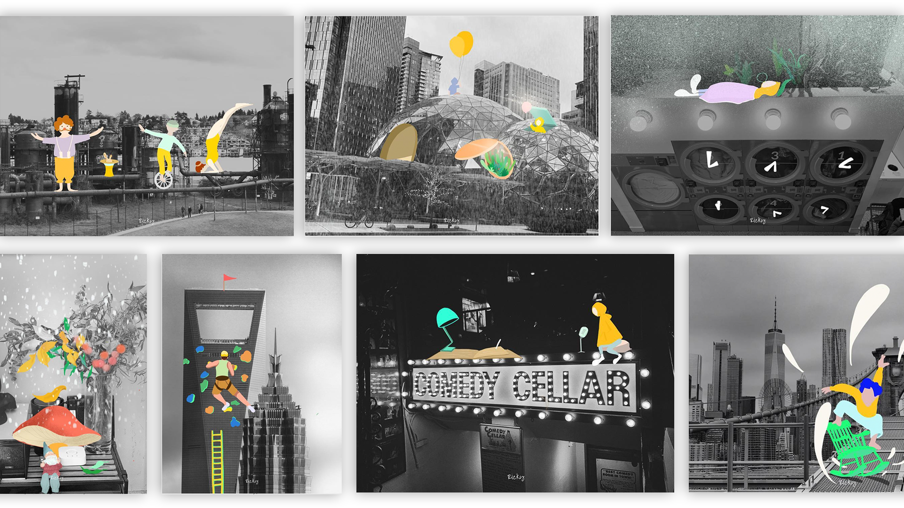
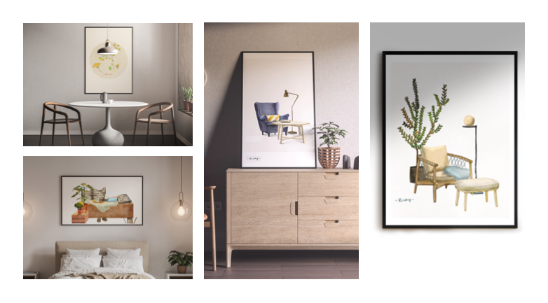

In my spare time, I enjoy playing with my drawing pad and exploring new tools, like building 3d creations that look weird but fun. Scratching a character that has a weird personality, drawing tons of illustrations by the mood. The reason why I called it the boring projects is I only do these things when I am feeling bored. After a few rounds of explorations, I think I love the feeling of creating sth without too many constraints and is a new way to express myself, and it can help me keep myself updated in the industry.
Series 1 - Layers
Check more info here
The black and white photos represent my normal daily life, combine with the colorful illustrations, it well captured my tiny moments during the daily life, It can be my imagination or factual things, I don't want to set constraints for this project, just want to give me a chance think about all these normal but might meaningful moments.
Series 5 - Watercolor Illustrations
